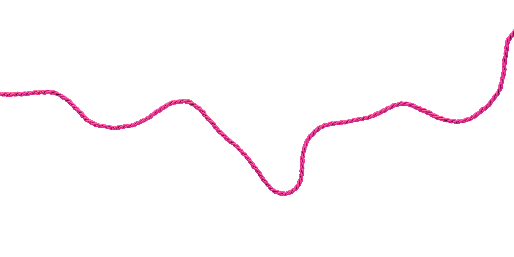
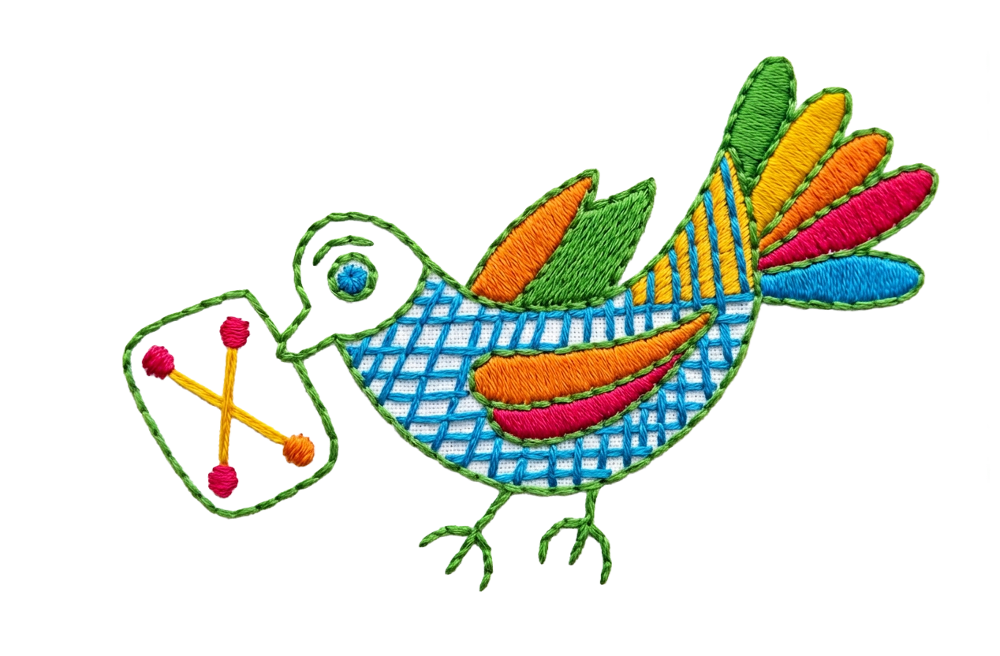
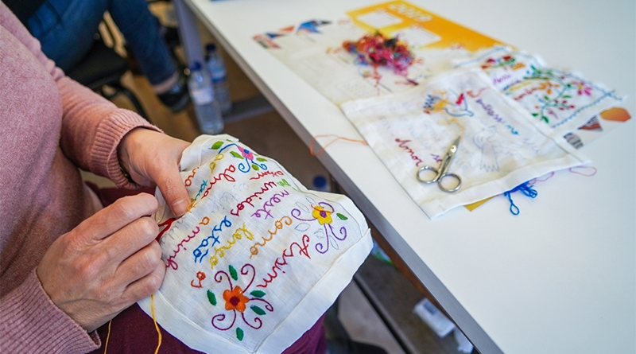
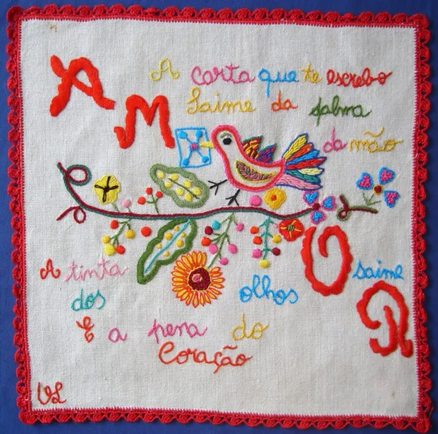
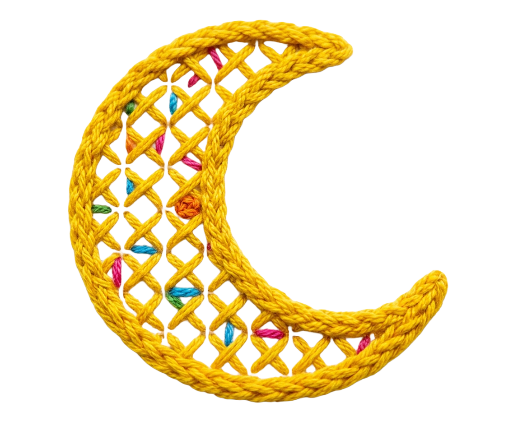
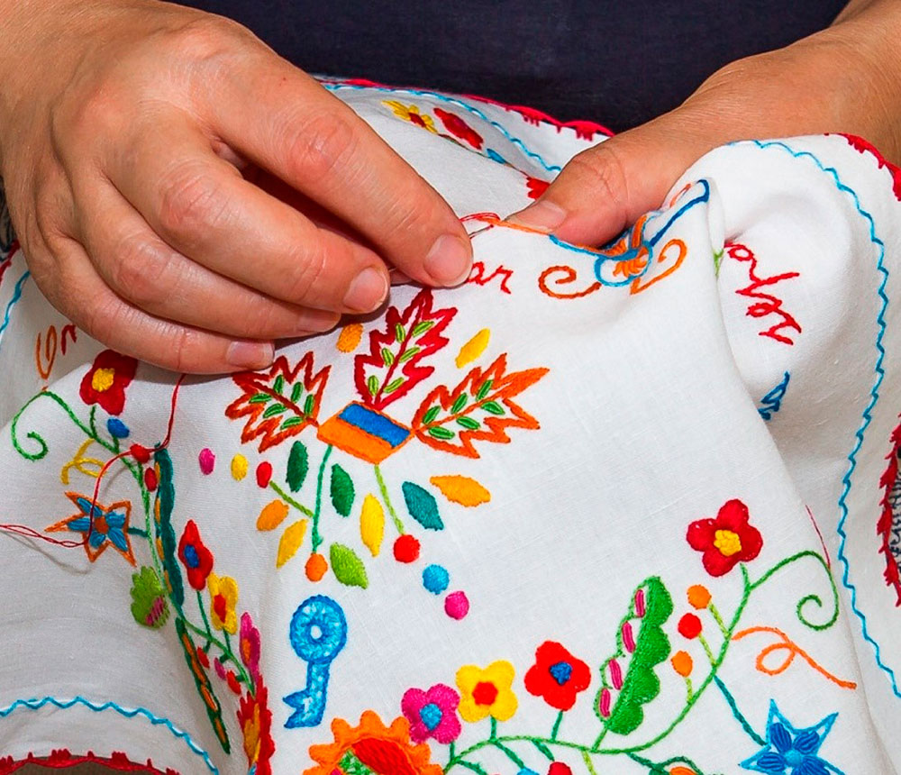

01
Origem
Séculos
17 e 18
17 e 18
As senhoras do Minho bordavam lenços para passar o tempo. Faziam parte do vestuário feminino com função decorativa. Eram quadrados, de linho ou algodão.

02
Tradição
Século
19
19
O lenço torna-se símbolo de amor. Namorados trocavam lenços bordados para dizer o que as palavras não ousavam. Cada ponto era uma promessa.


03
Resistência
Século
20
20
Com a modernização, o lenço foi perdendo o seu lugar. Mas as bordadeiras continuaram a preservar a tradição, passando-a de mãe para filha.

04
Hoje
O lenço
renasceu
renasceu
O lenço dos namorados é hoje Património Cultural Imaterial de Portugal. Um convite a escrever e sentir que comunicar com intenção nunca saiu de moda.